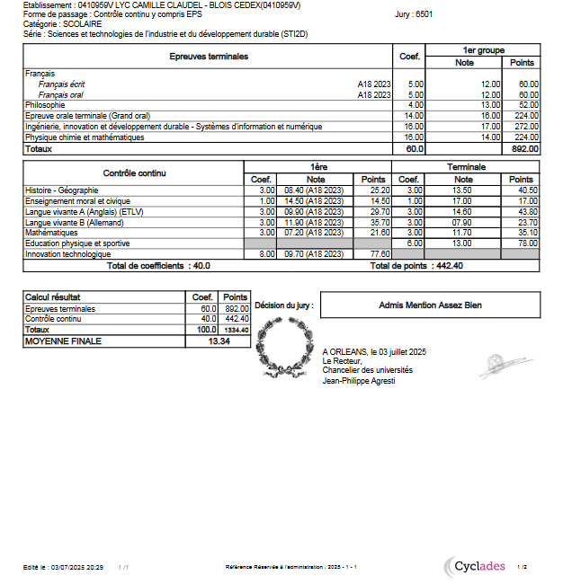

Détails des Diplômes
Diplôme du Baccalauréat STI2D (2025)
Obtenu au Lycée Camille Claudel, Blois.
Voir le site de l'établissementMention : Assez Bien
Aperçu des résultats :
Scan du relevé de notes officiel.
Diplôme National du Brevet (2021)
Obtenu au Collège SIS de Sèvres.
Voir le site de l'établissementMention : Assez Bien